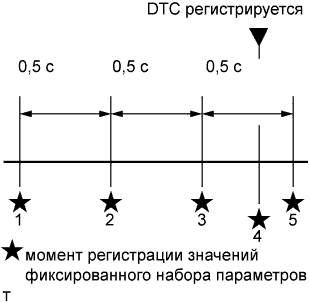

DTC P1603 Данные о заглохании двигателя |
| Режим поездки при обнаружении DTC | Условие обнаружения DTC | Неисправный участок |
| - | Не менее чем через 2 с после запуска двигателя работающий двигатель останавливается, по крайней мере, на 0,5 с без использования выключателя зажигания (для моделей с механической трансмиссией): давление в топливной системе падает до 10000 кПа или ниже, и впрыск топлива прекращается) (логика диагностирования за 1 поездку) |
|
| № DTC | Параметры из Data List |
| P1603 |
|
| Топливная система |
В топливной системе могут иметь место следующие неисправности.
Неисправности форсунок в сборе.
Неисправность нагнетающего топливного насоса в сборе.
Попадание воздуха в топливопровод.
Засорение фильтрующего элемента топливного фильтра в сборе.
| Двигатель в сборе |
В двигателе в сборе могут иметь место следующие неисправности.
Недостаточная компрессия.
|  |
| 1.СЧИТАЙТЕ КОДЫ DTC (ЗАПИШИТЕ СОХРАНЕННЫЕ КОДЫ DTC И ДАННЫЕ ФИКСИРОВАННОГО НАБОРА ПАРАМЕТРОВ (ПРОЦЕДУРА 1)) |
Подсоедините портативный диагностический прибор к DLC3.
Включите зажигание (IG) и портативный диагностический прибор.
Войдите в следующие меню: Powertrain / Engine and ECT / DTC.
Запишите сохраненные коды DTC и данные фиксированного набора параметров.
| ДАЛЕЕ | |
| 2.ПРОВЕРЬТЕ, ВЫВОДЯТСЯ ЛИ ДРУГИЕ DTC (ПОМИМО DTC P1603) |
Подсоедините портативный диагностический прибор к DLC3.
Включите зажигание (IG) и портативный диагностический прибор.
Войдите в следующие меню: Powertrain / Engine and ECT / DTC.
Считайте коды DTC.
| Результат | Следующий шаг |
| P1603 выводится | А |
| Помимо кода P1603 выводятся другие DTC | B |
|
| ||||
| А | |
| 3.ОПРЕДЕЛИТЕ ПРИЧИНУ НЕИСПРАВНОСТИ (ПРОВЕРЬТЕ ДАННЫЕ ФИКСИРОВАННОГО НАБОРА ПАРАМЕТРОВ И ЗАФИКСИРОВАННЫЕ МГНОВЕННЫЕ ЗНАЧЕНИЯ) |
Определите причину возникновения проблемы на основании данных фиксированного набора параметров, записанных в процедуре 1.
| Пояснение значений параметров режима Data List | Возможная причина | Нормальное состояние | Замечание по диагностике |
| Значение "Battery Voltage" в данных фиксированного набора параметров меньше 6 В | Затруднения при запуске двигателя могли быть обусловлены полным разрядом аккумуляторной батареи | Во время прокручивания коленчатого вала двигателя: 6 В или выше | Возможно, аккумуляторная батарея полностью разряжена, или ослаблены выводы аккумуляторной батареи. |
| Пояснение значений параметров режима Data List | Возможная причина | Нормальное состояние | Замечание по диагностике |
| Значение "Fuel Press" в данных фиксированного набора параметров меньше 25000 кПа (254,9 кгс/см2, 3626 фунтов на кв. дюйм) | Ненормальная подача топлива в нагнетающий топливный насос в сборе (в части системы с низким давлением)
| При стабильных условиях, например, во время работы двигателя на холостом ходу после прогрева, давление в топливной системе попадает в интервал +/-5000 кПа относительно заданного значения. | Если значение "Fuel Press" не превышает 10000 кПа (102,0 кгс/см2, 1451 фунта на кв. дюйм), управление впрыском топлива прекращается.
|
| Пояснение значений параметров режима Data List | Возможная причина | Нормальное состояние | Замечание по диагностике |
| Значение "Injection Feedback Val (#1 – #4)" в данных фиксированного набора параметров превышает +3,0 мм3/ход | Неисправность форсунки в сборе или ненормальная компрессия | Менее +3,0 мм 3/ход | Когда какая-либо форсунка в сборе неисправна, холостой ход является неравномерным несмотря на то, что двигатель запускается.
|
| В режиме холостого хода значение "Injection Feedback Val (#1 – #4)" в списке Data List превышает +3,0 мм3/ход |
| Пояснение значений параметров режима Data List | Возможная причина | Нормальное состояние | Замечание по диагностике |
| При работе двигателя на холостом ходу после прогрева значение "Injection Volume" в списке Data List не превышает 10 мм3/ход, а значение "Injection Feedback Val (#1 – #4)" находится в диапазоне 3,0 мм3/ход | Форсунки всех цилиндров в сборе неисправны | - |
|
| ДАЛЕЕ | ||
| ||